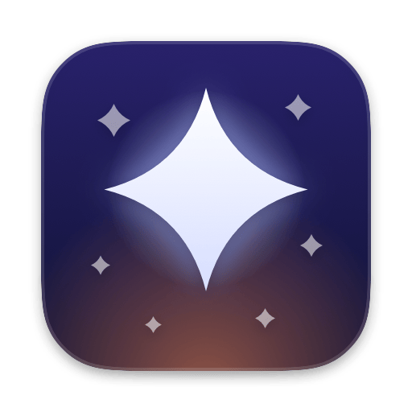
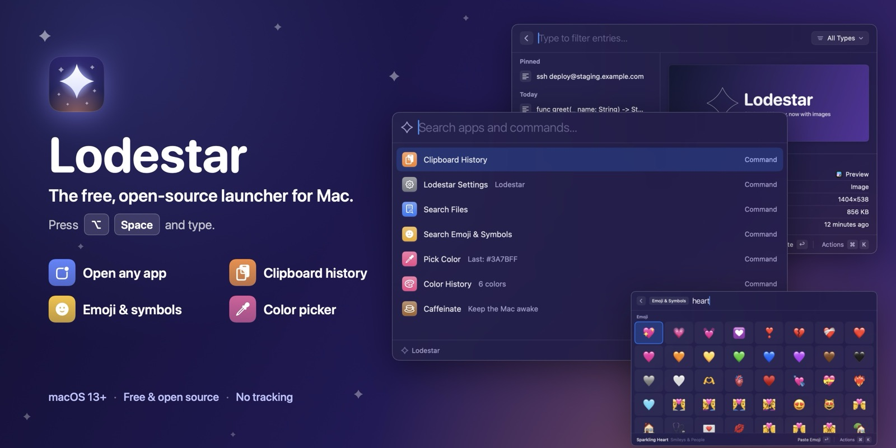
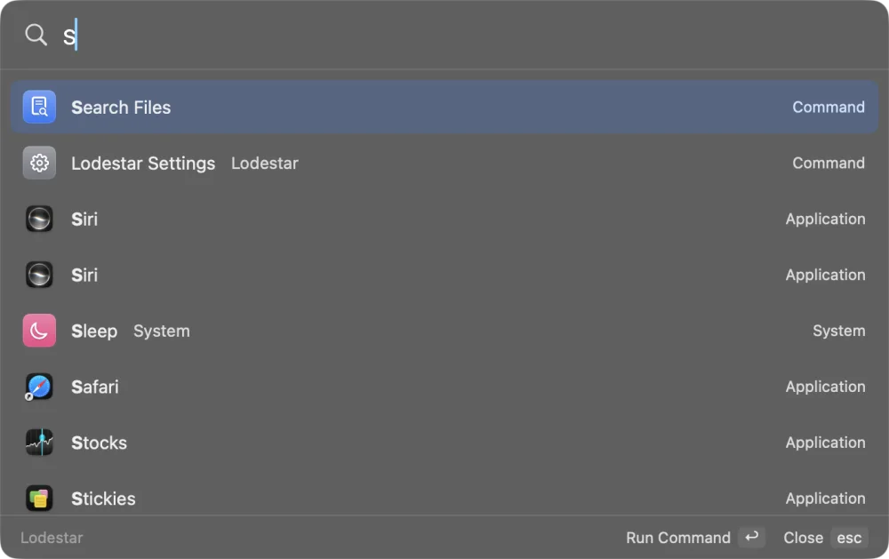
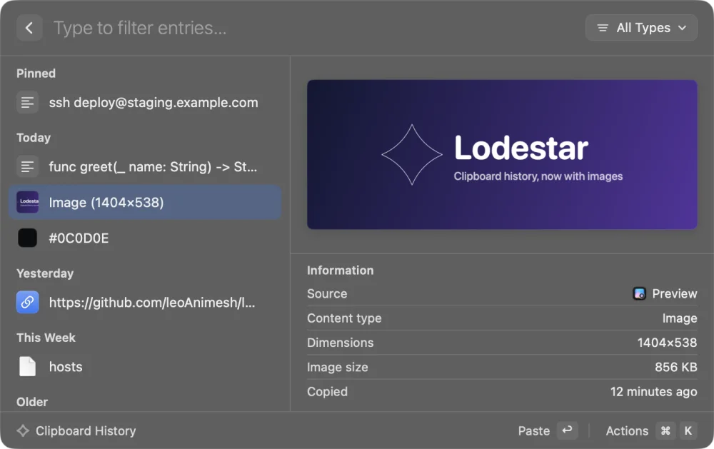
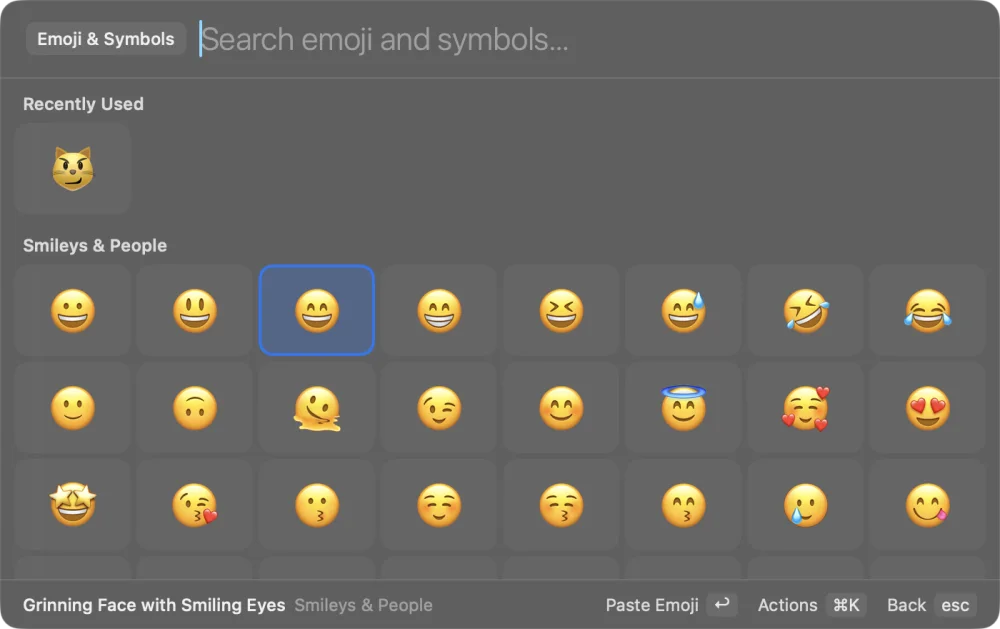

Lodestar
The free, open-source launcher for Mac
Press ⌥ Space, type a few letters, press Return. Open apps, search your clipboard, paste emoji and pick colors without leaving the keyboard.
Latest release · Apple silicon and Intel
Or install with Homebrew
brew tap leoanimesh/lodestar https://github.com/leoAnimesh/lodestar brew install --cask lodestar

Everything you reach for, one shortcut away
Lodestar lives in your menu bar, opens instantly and learns which apps you use most.
-
Open any app in a keystroke
Type
slfor Slack orcalfor Calendar. The apps you use most rise to the top, and quick math like2^10 / 4works too. -
Clipboard history
Never lose something you copied. Text, links, images, colors and files, searchable and pinnable. It stays on your Mac.
-
Emoji & symbols
Type
rocketorthumbs upand press Return to paste. Includes ⌘ ⌥ ⇧, arrows, math and currency symbols. -
Color picker
Grab any pixel on screen, copy its HEX or RGB, and find it again later in Color History.
-
Caffeinate
Keep your Mac awake during a download, a build or a talk, then let it sleep again.
-
File search & Open With
Find files in your home folder, then open them, show them in Finder or open them with another app.
-
System commands
Lock, sleep, restart, empty the Trash, toggle Dark Mode and more, each with an optional alias or hotkey.
-
Scripts & extensions
Drop a shell script in a folder and it becomes a command, or write a list-style extension in any language.
-
Automatic updates
A daily check on GitHub, a prompt before installing, and a checksum check before anything is replaced.
Native, fast and keyboard-first
Built in Swift and SwiftUI. Every result has more actions under ⌘ K, each with its own shortcut.

Search apps and commands 
Clipboard history with previews 
Emoji & symbols by name
Why Lodestar
A launcher sees what you type and copy, so it should be one you can read. Lodestar is small, open and stays out of your business.
- No account, analytics or trackingNothing to sign up for, nothing reported about you.
- Your clipboard stays on your MacStored locally, readable only by you, and it skips passwords that password managers mark as private.
- One network request, and you can turn it offThe daily update check to GitHub. Web search and links open only when you ask.
- Open source under MITRead every line on GitHub, build it yourself, or send a pull request.
- Signed and notarized by AppleOpens like any other Mac app, with a SHA256SUMS.txt on every release.
- Light and nativeA small Swift and SwiftUI app in your menu bar, not a web page in a wrapper.
Questions
Short answers. The README has the long ones.
Is it free?
Yes. Lodestar is free and open source under the MIT license. There's no account, trial, subscription or paid tier.
Does it replace Raycast or Alfred?
For the everyday basics, yes: opening apps, clipboard history, emoji, quick math, color picking, file search and system commands. It doesn't have Raycast's extension store or cloud features. Lodestar is an independent project and isn't affiliated with Raycast or Alfred.
Is it safe? Is it notarized?
Releases since v0.1.1 are signed with a Developer ID and notarized by Apple, so macOS opens them normally. The full source is on GitHub, and each release ships a SHA256SUMS.txt you can check with shasum -a 256 -c SHA256SUMS.txt.
How do updates work?
Lodestar checks GitHub Releases once a day and asks before installing. It verifies the download against the release's published checksum before it replaces itself, and changes nothing if they don't match. You can check manually from the menu bar or turn automatic checks off in Settings. Homebrew users can also run brew upgrade --cask --greedy lodestar.
How do I add my own commands?
Put any script in ~/.config/lodestar/scripts/ and it becomes a command. For list-style commands, write an extension in any language. See Script commands and Extensions. Scripts run with your permissions, so only install ones you trust.
Try Lodestar
Free, open source and notarized. Drag it to Applications and press ⌥ Space.